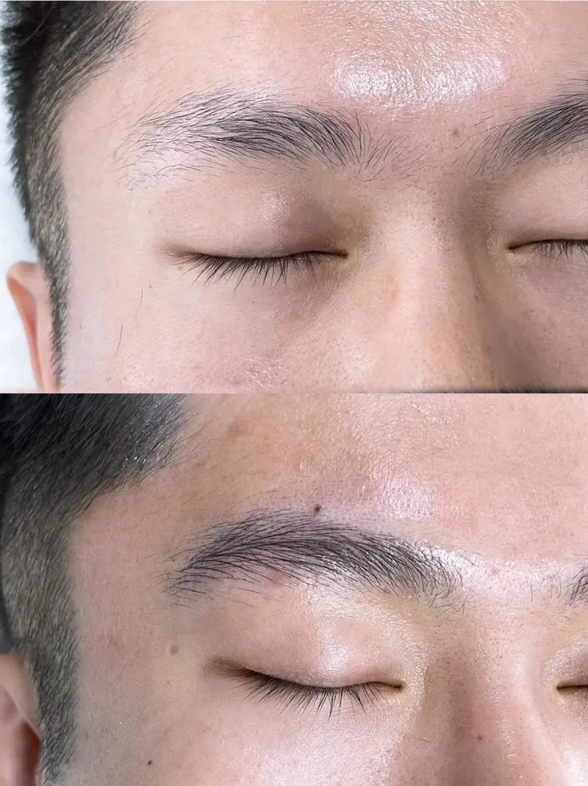

作品记录
作品记录
一句话答案：这里是描眉画目 · 定制美学在上海浦东三林工作室的实际作品记录，共 36 组，按项目分类：女士野生眉、男士野生眉、扩唇 / 唇形调整、纹发际线、纹人中窝。每个人原生眉基础、肤质和审美不同，同样的做法做出来也不一样，具体设计以到店沟通为准。
怎么看这些图
把图放大，看能不能认出单根线条和毛流方向；能看清线条的图才有参考价值。可以重点看眉峰定在哪、眉尾收在哪里、毛流是不是顺着原生方向走，而不是只看整体好不好看。
这些是门店自己的记录，不是素材库图。不同人的基础不同，别人做出来的效果不能当成对自己的承诺。
女士野生眉（21 组）
按原生眉基础设计，整理眉峰、眉尾和毛流方向。


男士野生眉（6 组）
按男士原生毛流和脸型设计，不单独设项目档位。



扩唇 / 唇形调整（5 组）
调整唇形和轮廓，不是整唇改色。


纹发际线（2 组）
按原生头发生长方向模拟毛流。


纹人中窝（2 组）
按人中形态调整，属于局部项目。